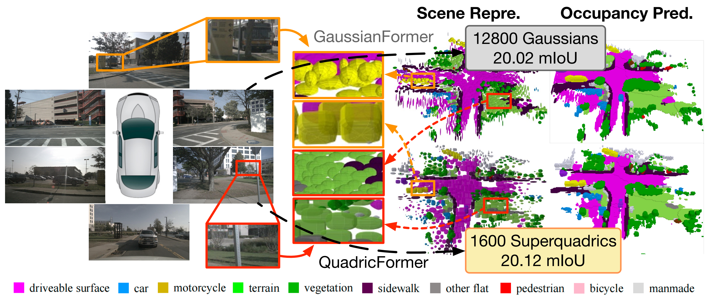
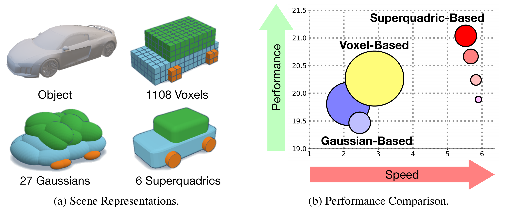
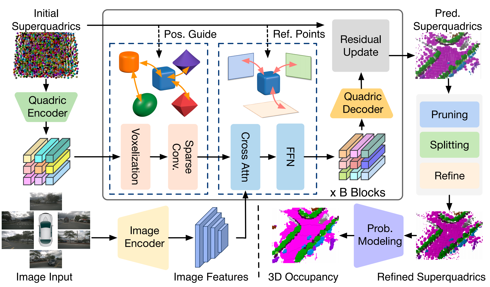
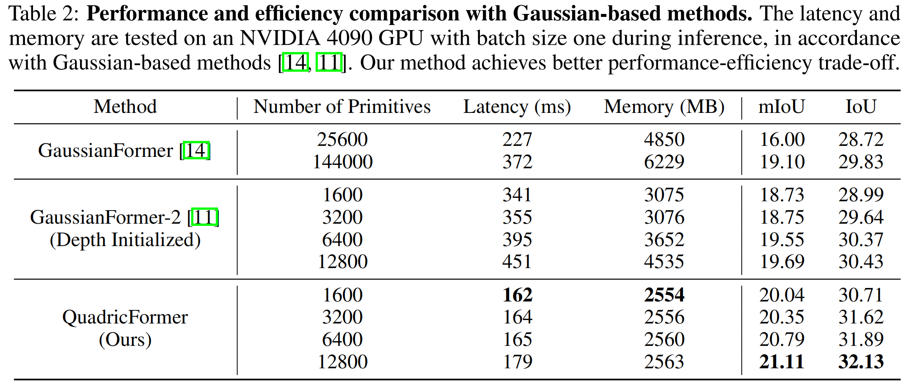
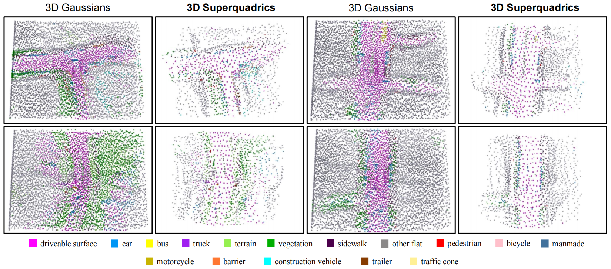

QuadricFormer: Scene as Superquadrics
for 3D Semantic Occupancy Prediction

Overview of our contributions. We propose a probabilistic superquadric mixture model for efficient 3D occupancy prediction in autonomous driving scenes. Unlike previous methods based on dense voxels or ellipsoidal Gaussians, we leverage geometrically expressive superquadrics as scene primitives to effectively capture the diverse structures of real-world objects with fewer primitives. Experiments on the nuScenes dataset show that QuadricFormer achieves state-of-the-art accuracy with superior efficiency compared to existing methods.
Superquadrics are a powerful family of parameterized surfaces that can represent various geometric shapes. With just a few shape parameters, superquadrics can generate shapes ranging from basic ellipsoids, cuboids, and cylinders to more complex shapes with rounded corners, star-like profiles, and smooth transitions between them. This geometric flexibility allows them to capture complex structures with significantly fewer primitives than traditional representations (like ellipsoidal Gaussians), highlighting their superior modeling efficiency and expressive power for 3D scene understanding tasks.
An efficient and expressive 3D representation is essential for 3D occupancy prediction. Traditional voxel-based methods capture scene details but are computationally expensive and disregard scene sparsity. Recent Gaussian-based approaches sparsely represent objects, but the inherent ellipsoidal shape prior of 3D Gaussians limits their ability to model diverse geometries, requiring many densely packed Gaussians for accuracy and compromising efficiency. In contrast, we propose using geometrically expressive superquadrics for efficient object-centric representation, which can model complex structures in driving scenes with much fewer primitives.

We propose a probabilistic superquadric mixture model for efficient 3D occupancy prediction in autonomous driving scenes. Our QuadricFormer interprets each superquadric as an occupancy distribution with geometry priors and aggregates semantics via probabilistic mixture. Additionally, we design a pruning-and-splitting module to dynamically allocate superquadrics in occupied regions, enhancing modeling efficiency.

QuadricFormer consistently outperforms prior methods in both 3D semantic occupancy prediction and computational efficiency. Specifically, our method achieves the highest mIoU (up to 21.11) and IoU (up to 32.13), surpassing all Gaussian-based approaches. In terms of efficiency, QuadricFormer significantly reduces both latency and memory usage. For similar or even fewer primitives (e.g., 1600 or 3200), our method achieves a latency as low as 162 ms and 2554 MB memory consumption, which are substantially lower than others.

We visualize the position distributions of scene primitives using 1600 superquadrics versus 6400 Gaussians. Gaussian-based methods require a dense arrangement of Gaussians throughout the entire 3D space to model the scene, leading to numerous redundant Gaussians and low modeling efficiency. In contrast, our superquadric-based method learns well-structured spatial arrangements, enabling it to effectively model the scene structure with significantly fewer primitives.
